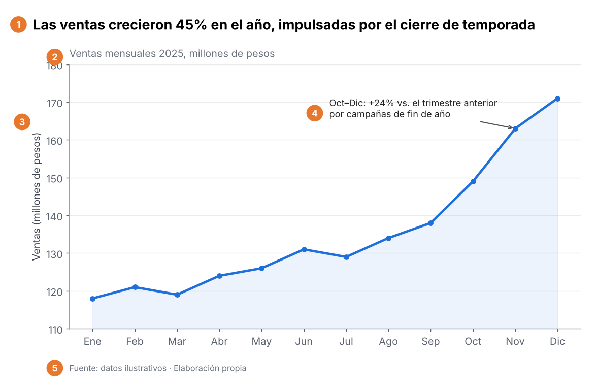
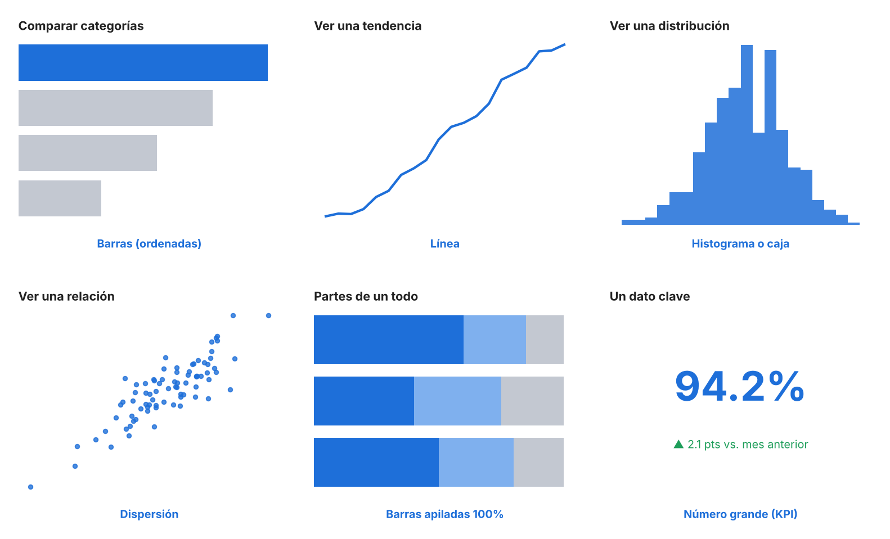
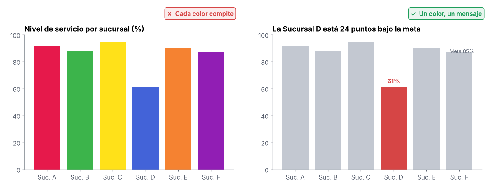
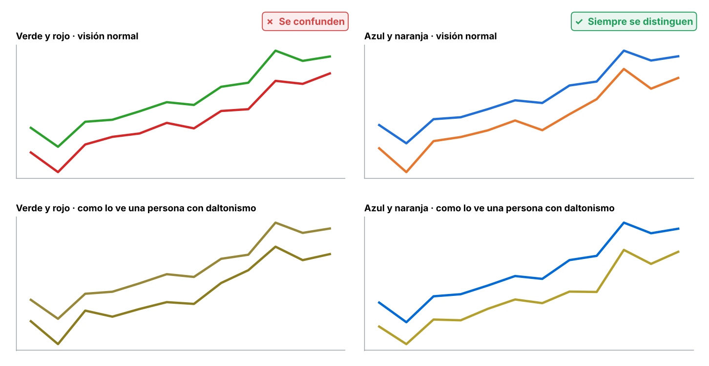
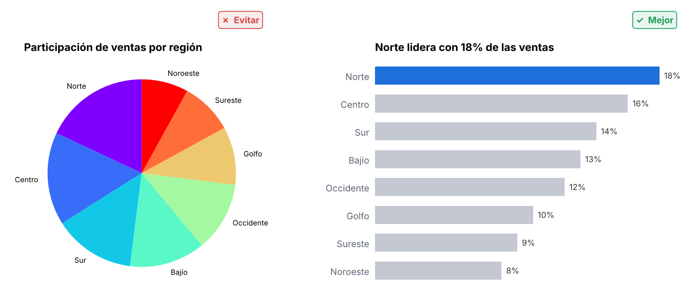
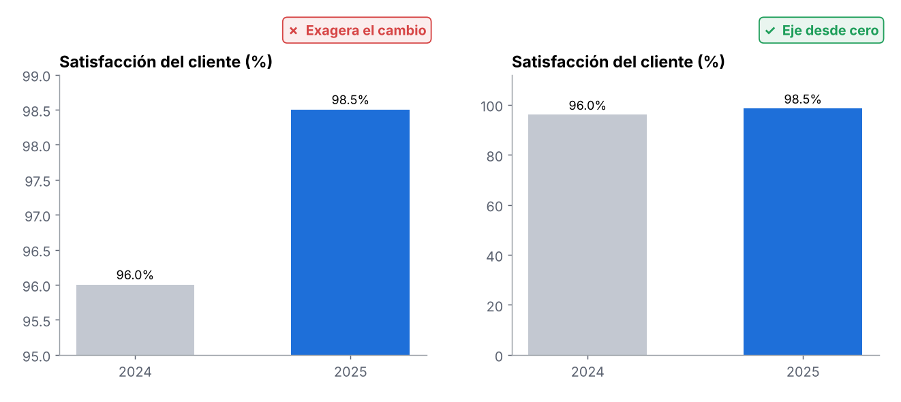
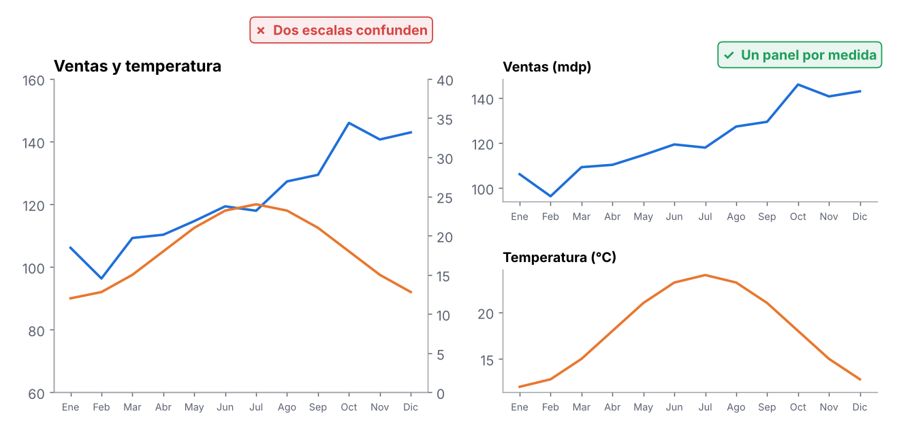
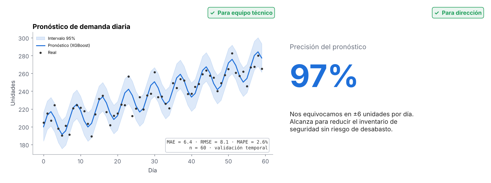

El storytelling en ciencia de datos es una técnica que permite comunicar de manera efectiva y atractiva los resultados del análisis de datos. Implica la presentación de datos complejos y hallazgos de forma accesible, utilizando narrativas claras, visualizaciones, y contextos que ayuden a la audiencia a comprender el significado e importancia de los resultados. El objetivo es transformar los datos en ideas accionables y comprensibles para la audiencia, ya sea para la toma de decisiones, para la identificación de oportunidades o para la comprensión de patrones y tendencias.
1 Los tres pilares
Una historia con datos funciona cuando se combinan tres cosas. Si falta una, el mensaje se pierde:
Datos
La evidencia. Sin datos confiables la historia es solo opinión.
Narrativa
El hilo conductor: qué pasó, por qué importa y qué hacer.
Visualización
Lo que hace que el patrón se vea en segundos, no en minutos.
2 Antes de graficar: conoce a tu audiencia
La misma información se presenta distinto según quién la recibe. La pregunta clave es: ¿qué decisión va a tomar esta persona con lo que le muestre?
| Audiencia | Qué quiere saber | Nivel de detalle | Formato ideal | Ejemplo de título |
|---|---|---|---|---|
| Dirección | ¿Cuánto dinero, cuánto riesgo y qué hago? | Mínimo: 1 a 3 cifras clave | KPI grande, 1 gráfica, recomendación | “Reducir inventario 8% libera 12 mdp sin riesgo de desabasto” |
| Gerencia y operación | ¿Dónde está el problema y quién lo atiende? | Medio: por sucursal, región o proveedor | Tablero con filtros, ranking, semáforo | “5 sucursales concentran el 60% de los faltantes” |
| Equipo técnico | ¿Es correcto el método? ¿Se puede replicar? | Alto: métricas, supuestos, validación | Gráficas con error, intervalos y código | “XGBoost: MAE 6.4 en validación temporal de 60 días” |
| Público general (redes, divulgación) | ¿Por qué me importa? | Bajo: una sola idea | Ejemplo cotidiano, animación, metáfora | “¿Cómo sabe el banco si te presta? Así decide un modelo” |
3 Estructura de la historia
Toda presentación de datos sigue un arco narrativo, igual que una buena película:
4 Anatomía de una buena gráfica

- Título que dice la conclusión, no el tema. “Las ventas crecieron 45%” en lugar de “Ventas 2025”.
- Subtítulo con qué se mide y en qué unidades (millones de pesos, porcentaje, piezas).
- Ejes etiquetados y una escala que no engañe.
- Una anotación que señala lo importante y explica el porqué.
- Fuente y periodo, para que cualquiera pueda verificar el dato.
5 ¿Qué gráfica uso?
La gráfica se elige por la pregunta que responde, no por cuál se ve más bonita:

| Quiero mostrar… | Usa | Evita |
|---|---|---|
| Comparar categorías | Barras horizontales ordenadas de mayor a menor | Pastel con muchas rebanadas, barras sin orden |
| Tendencia en el tiempo | Línea (el tiempo siempre en el eje horizontal) | Barras con decenas de periodos, áreas apiladas difíciles de leer |
| Distribución | Histograma, diagrama de caja | Solo el promedio (oculta los extremos) |
| Relación entre dos variables | Dispersión, con línea de tendencia si ayuda | Doble eje vertical |
| Partes de un todo | Barras apiladas al 100%; pastel solo con 2 o 3 partes | Pastel con más de 5 rebanadas, dona 3D |
| Un dato clave | Número grande con su comparación (vs. meta, vs. mes anterior) | Velocímetro o gráfica para un solo número |
| Datos geográficos | Mapa coroplético con escala de un solo color | Mapa con arcoíris de colores |
| Muchos números exactos | Tabla bien formateada (alineada a la derecha, separadores de miles) | Gráfica saturada de etiquetas |
6 Cómo leer una gráfica (y enseñar a leerla)
Al presentar, guía a tu audiencia por estos pasos en voz alta. Al revisar la gráfica de alguien más, úsalos para detectar trampas:
7 El color: menos es más
El color es la herramienta más poderosa para dirigir la mirada, y la más fácil de usar mal. Si todo tiene color, nada destaca.

No
- Arcoíris en datos que no son categorías distintas.
- Rojo para algo positivo (confunde la lectura automática).
- Verde junto a rojo como única diferencia: cerca de 1 de cada 12 hombres no los distingue.
- Colores neón o saturados en todo el fondo.
- Texto de color sobre fondo de color sin contraste.
Sí
- Gris para el contexto y un color de acento para lo que importa.
- Colores con significado: rojo = problema, verde = bien. Úsalos solo para eso.
- Escala de un solo color (claro → oscuro) para magnitudes, como en mapas o mapas de calor.
- Escala divergente (dos colores y gris al centro) cuando hay positivo y negativo, por ejemplo vs. la meta.
- El mismo color para la misma cosa en todas las gráficas de la presentación.
- Máximo 5 o 6 colores por gráfica.
Piensa en quien no ve todos los colores

Arriba, la visión normal; abajo, la misma gráfica simulada con daltonismo (deuteranopía). El par azul y naranja se distingue siempre. Además del color, agrega una etiqueta directa o un tipo de línea distinto.
8 Lo que no se usa (aunque se vea llamativo)
Una gráfica llamativa atrae la mirada; una gráfica efectiva se entiende. Lo ideal es que sea las dos cosas, pero si hay que elegir, gana la efectiva.
El pastel con muchas rebanadas

El ojo humano compara mal ángulos y áreas, pero compara muy bien longitudes. ¿Centro o Sur es más grande en el pastel? En las barras se ve al instante.
El eje que no empieza en cero

En barras, cortar el eje hace que un cambio de 2.5 puntos parezca enorme. Las barras siempre desde cero. En gráficas de línea sí se vale ajustar el eje para ver la variación, siempre que se indique.
El doble eje vertical

Con dos escalas, el cruce de las líneas depende de cómo se eligieron los ejes, no de los datos. Mejor un panel por medida, o ambas indexadas a una base común (enero = 100).
Efectos 3D
Deforman las proporciones: la rebanada del frente siempre parece más grande.
Etiquetas en todo
Un número en cada punto satura. Etiqueta solo lo que vas a mencionar.
Leyenda lejana
Obliga a ir y venir con los ojos. Escribe el nombre junto a la línea.
Velocímetros
Ocupan mucho espacio para mostrar un solo número.
Nubes de palabras
Se ven bien, pero no permiten comparar frecuencias con precisión.
Fondos con imagen
Compiten con los datos y bajan el contraste.
9 Público técnico vs. no técnico
El mismo modelo de pronóstico, contado para dos audiencias:

| Equipo técnico | Negocio y dirección | |
|---|---|---|
| Lenguaje | MAE, RMSE, intervalo de confianza, validación cruzada | “Nos equivocamos en ±6 unidades por día” |
| Incertidumbre | Bandas de intervalo, distribución del error | Escenarios: pesimista, esperado, optimista |
| Gráficas | Residuales, curvas de aprendizaje, importancia de variables | Un KPI, una tendencia, una comparación contra la meta |
| Detalle | Supuestos, datos, código y limitaciones | El detalle técnico va en el anexo, por si preguntan |
| Cierre | Siguientes pasos de mejora del modelo | Decisión que se pide, costo y beneficio |
10 Cómo exponer
Antes
- Escribe en una sola frase lo que quieres que recuerden.
- Una idea por diapositiva, con el título como conclusión.
- Prepara un anexo con el detalle técnico.
- Ensaya en voz alta y mide el tiempo.
- Anticipa las 3 preguntas más difíciles.
Durante
- Empieza con el problema o la cifra más fuerte.
- Antes de interpretar, explica cómo se lee la gráfica.
- Revela la información poco a poco, no todo a la vez.
- Señala lo que estás diciendo; no leas la diapositiva.
- Haz pausas después de los datos clave.
Después
- Cierra con la acción concreta: quién, qué y cuándo.
- Si no sabes una respuesta, dilo y comprométete a enviarla.
- Comparte un resumen de una página.
- Pide retroalimentación sobre qué no quedó claro.
11 Checklist final
- ¿El título dice la conclusión?
- ¿Se entiende en 5 segundos sin que yo lo explique?
- ¿Elegí la gráfica por la pregunta que responde?
- ¿Las barras empiezan en cero y las unidades están claras?
- ¿Uso un solo color de acento, y es distinguible para personas con daltonismo?
- ¿Quité todo lo que no aporta (3D, bordes, etiquetas de más)?
- ¿El nivel de detalle es el adecuado para esta audiencia?
- ¿Termino con una recomendación o acción concreta?
- ¿Indiqué la fuente y el periodo de los datos?
Las gráficas de esta página usan datos ilustrativos, creados para explicar cada concepto.
 Conocimiento
Conocimiento